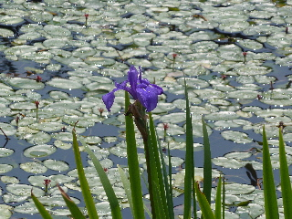
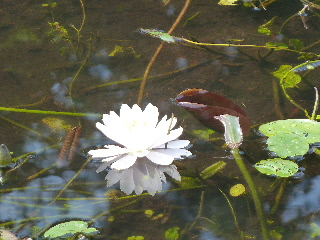
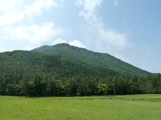
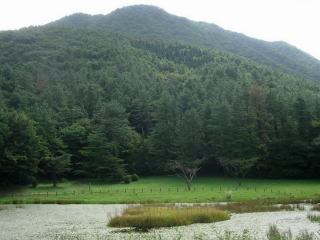

姫逃池では水連が見頃でした。
2012/06/17
三瓶山にある姫逃池といえばカキツバタが有名ですが、もう時期は終わってて少しだけ咲いていました。

代わりにスイレンが咲いていました。

睡蓮は沢山咲いてて綺麗でした。

三瓶山ではもう蝉が鳴いていました。
黒い身体で透明な羽根のセミが、松の木の周りを飛び回っていました。
他にも、オレンジ色の蝶や、蜂が野花に沢山とまっていました。
自然がいっぱいありますね。
島根県大田市三瓶町多根
2012/06/17
三瓶山にある姫逃池といえばカキツバタが有名ですが、もう時期は終わってて少しだけ咲いていました。

代わりにスイレンが咲いていました。

睡蓮は沢山咲いてて綺麗でした。

三瓶山ではもう蝉が鳴いていました。
黒い身体で透明な羽根のセミが、松の木の周りを飛び回っていました。
他にも、オレンジ色の蝶や、蜂が野花に沢山とまっていました。
自然がいっぱいありますね。
2008/09/27
サヒメルの外で散歩してたら姫逃池に着きました。近いんですね。
西の原は人が沢山いるんですけど、北の原はとってもすいててのびのび出来て良かったです。
三瓶山の眺めは西の原の方がいいですけど、北の原も広い原っぱがあったり、池や林があっていいですね。三瓶山にある姫逃池といえばカキツバタが有名ですが、もう時期は終わってて少しだけ咲いていました。
